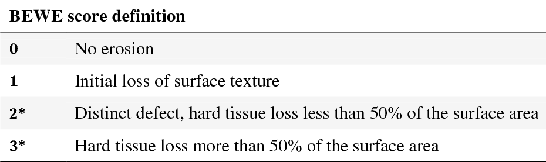

Project Research
Doing research for this project was extremely crucial as we were not building on top of previous work. This had to be done from scratch and related work is sparse. Especially when in the context of industry, most work that has been is purely academic.
Clinical Decision Support System
Clinical Decision Support Systems (CDSS) are systems intended to improve healthcare delivery by enhancing medical decision-making capabilities with targeted clinical knowledge, patient information, and other health information. Below is the general structure of such a system. It is key here to note that the ultimate goal is to assist clinicians in their work and not replace it. 1
There are also different kinds of CDSS that use different methods to provide support to clinicians. A few can be seen below.
3D Tooth Models
One of the core goals of this project is to ensure that it works with 3D tooth models. The reason for this is due to the greater detail in 3D models as opposed to 2D scans which has greater potential for more accurate analysis of tooth wear through volumetric loss and structural irregularity.
The most common file format for such 3D models is STL which is most commonly used for 3D printing. A less common format is PLY that is very similar to STL, but also perserves the color of the model. This is useful as discoloration is often a key indicator of the severity of tooth wear.
Tooth Wear Indices
In order to convert tooth wear analysis into tangible and useable information we had to use Tooth Wear Indices as a basis for any algorithms that will provide clinicians with suggestions. Fortunately, there has been plenty of work done within this field. Below are the three most prominant indices.
BEWE
TWES 2.0

TWI
After considering all the literature we had read, we were uncertain and decided to ask our client whose medical knowledge and experience would be helpful. After discussing with our client, we concluded that TWES 2.0 would be the best option. This is because it provides 5 simple answers but the classification by which a degree of tooth wear is placed into a specific level is very robust.
Tooth Grading Algorithm
The main algorithms that have been used in academic work for tooth wear grading are classification and segmentation. Then followed by the actual grading algorithm. There are various approaches and different models to achieve this but most first classify the various kind of teeth and then segment them. Once the individual tooth has been isolated, it can be graded through any ML or AI based method that considers volumetric loss and discoloration.
However, the issue with such algorithms is that they are very specialised particularly for 3D tooth models. They are not open source and optimised for industrial use yet. Therefore, we had to settle for a more general purpose architecture and trade off some accuracy for effiency. One such model that is well known is the PointNet network. Its general structure is depicted below.